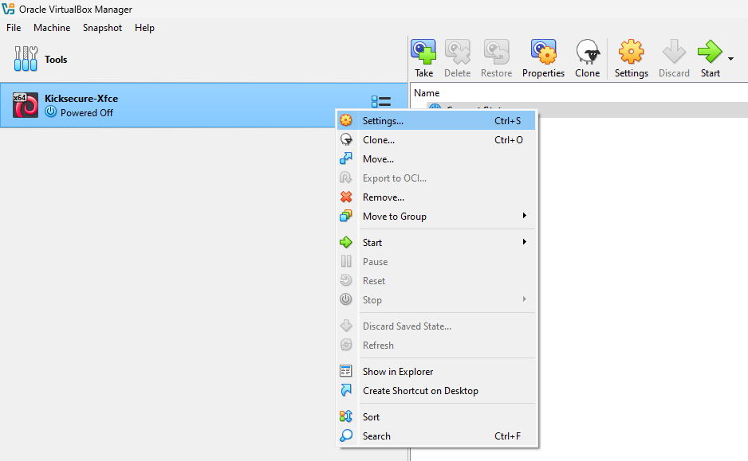
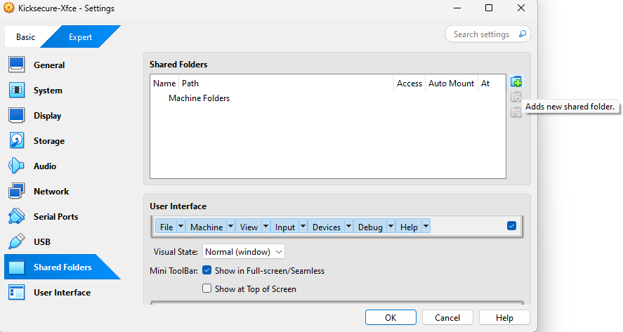
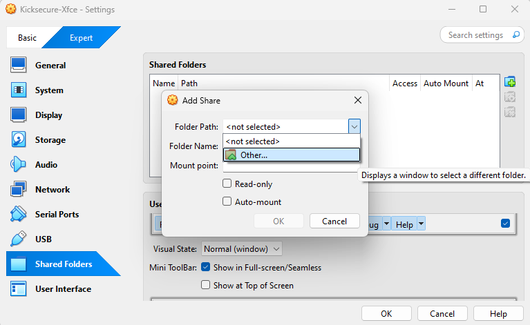
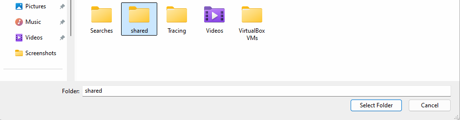
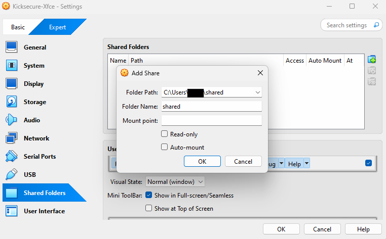
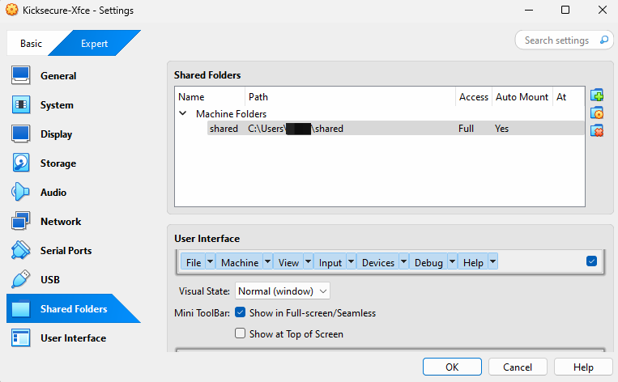

We believe security software like Kicksecure needs to remain Open Source and independent. Would you help sustain and grow the project? Learn more about our 14 year success story and maybe DONATE!
Verify the images using macOSDocumentationVirtualBox/Higher Screen Resolution without installing VirtualBox Guest AdditionsPrevious page: Verify the images using macOSIndex page: DocumentationNext page: VirtualBox/Higher Screen Resolution without installing VirtualBox Guest AdditionsVirtualBox Guest Additions: Clipboard Sharing, Shared Folder, and More
Clipboard sharing allows you to copy and paste text between the host and a virtual machine (VM).
This documentation explains the status of clipboard sharing in Kicksecure and its derivatives such as Whonix.
VirtualBox Guest Additions is a software package that provides additional functionality to virtual machines (VMs) running in VirtualBox. The Guest Additions package includes drivers and utilities that enhance both performance and usability of the VMs.
Guest Additions provides features such as clipboard sharing, seamless mouse integration, shared folder between the host and guest operating systems, improved graphics performance, and the ability to dynamically resize the guest display.
Guest Additions are installed by default in Kicksecure and its derivatives such as Whonix®.
Important: Clipboard sharing is currently broken in Kicksecure 18. See Clipboard Sharing for details.
Clipboard Sharing

- Status: Broken
- Workaround: None.
- Alternative: Use a text file inside the Shared Folder to exchange text between the host and VM.
- Reason for breakage: Port from X11
to Wayland (security enhancement). Clipboard is not synced with
Wayland or Xwayland so
wl-clipboardcannot be used to circumvent the issue. - VirtualBox upstream bug report: Clipboard sharing with Wayland guest not working
- Forum discussion: How to enable Shared Clipboard & Drag-and-Drop features inside VirtualBox with Whonix-LXQt-18.0.8.7 ?
For Clipboard Sharing Security Considerations, please press Learn More on the right side.
Kicksecure 17: Bidirectional clipboard sharing is currently enabled by default.
Kicksecure 18: Bidirectional clipboard sharing is currently disabled by default. [1]
There are good reasons to enable clipboard sharing. It is up to the user to decide whether to enable clipboard sharing.
Archived, no longer functional instructions.
To change the clipboard sharing setting:
- Power off the virtual machine. [2]
- Navigate to
VirtualBox machine settings→General→Advanced→Shared Clipboard - Set the preferred configuration:
Disabled,Guest to Host,Host to GuestorBidirectional. - Power on the virtual machine again.
To learn more, see: VirtualBox Manual - Chapter 3. Configuring Virtual Machines.
Shared Folder
Want to share a folder between your host and your virtual machine?
This guide shows you how with two different methods:
- A
Simplified method for Kicksecure and derivatives like
Whonix
- Fewer options: simpler.
- B
Standard method for other operating systems like Debian
- Follows regular VirtualBox setup steps
For additional explanations for absolute beginners, please press Learn More on the right side.
Before starting, make sure:
- 1 VirtualBox is installed on your host operating system.
- 2 A virtual machine (VM) is already created and set up.
- 3 You have basic familiarity with opening applications and navigating file paths.
Glossary:
- Host operating system (OS): The main system where VirtualBox is installed (e.g., your laptop or desktop OS).
- virtual machine (VM): A simulated computer running inside VirtualBox.
- Guest Operating System: The OS running inside the VM (e.g., Kicksecure or Whonix).
- Shared Folder: A folder that both the host and the VM can access for transferring files.
- Mount: The process of making a shared folder accessible inside the VM.
- Read-only: A setting that allows viewing files but not editing them.
To learn more about VirtualBox shared folder, see: VirtualBox Manual - Chapter 4. Guest Additions.
For Shared Folder Security Considerations, please press Learn More on the right side.
Shared folders are discouraged because they weaken isolation between the guest and the host. Providing a mechanism to access files of the host system from within the guest system via a specially defined path necessarily enlarges the attack surface and provides a potential pathway for malicious actors to compromise the host.
This recommendation does not have a strong rationale. Disabling additional features in other virtualizers or general applications will similarly lead to fewer code paths being utilized and arguably increase security. VirtualBox software is not special in this regard.
Forum discussion: Security Risks of VirtualBox Shared Folders?
Select the system you're using inside the virtual machine (VM), and follow the matching instructions.
Kicksecure
If you are using Kicksecure (or a derivative such as Whonix), follow the steps below.
X Sysmaint Notice

- A
If using
user-sysmaint-split: The user must boot into the sysmaint session. For details and instructions on how to do so, see user-sysmaint-split. - B If using unrestricted admin mode: This sysmaint notice does not apply. Continue with the steps below.
In System
Maintenance Panel, press Install Updates or
upgrade using command line.
sudo apt update && sudo apt dist-upgrade
1 Host folder preparation.
On the host operating system, create a folder to be shared with the
virtual machine (VM). For example, on a Linux host
operating system, create the folder /home/user/shared.
2 Open VirtualBox VM Shared Folder Settings.
Oracle VirtualBox Manager →
right-click the virtual machine → Settings →
Shared Folder
Figure: Screenshot showing how to open VirtualBox VM Settings

3 Add new shared folder.
Click the folder icon with a + symbol in the upper
right-hand section of the screen.
Figure: Screenshot showing VirtualBox Shared
Folder Add + Symbol

4 Host Shared Folder Selection.
Folder Path → Navigate to the folder you want to
share.
Figure: Screenshot showing Host Shared Folder Selection

5 Host Shared Folder Selection.
Folder Name → Type: shared. A different
folder name can be used, but manual mounting in the VM will be
required.[3] Then press Select Folder.
[4]
Figure: Host Shared Folder Selection

6 Shared Folder Settings
- A
Uncheck
Read-only: Keep it de-selected. [5] - B
Ensure
Auto-mountis unchecked: Keep it de-selected. - C
Mount Point→ Leave as is (leave it empty and do not make any changes).
Figure: Shared Folder Settings

7 Confirm shared folder settings.
Press OK to close the shared folder dialog.
8 Confirm VirtualBox settings.
Press OK to close the VirtualBox settings.
Figure: Completed VirtualBox Shared Folder Settings Screenshot

9 Reboot the virtual machine.
10 Notice.
No group modifications required. Documentation is complete as is. [6]
11 Done.
The process is now complete, and the shared folder can be used.
12 Usage.
The shared folder will be accessible via /mnt/shared
inside the VM. [7] The folder can be opened using a file manager such as
Thunar, for example. To open it using the command line, run:
cd /mnt/shared
Whonix
Same as Kicksecure. Follow the same instructions as for
Kicksecure.

Other Operating Systems
If you are using other operating systems (not using Kicksecure or a derivative such as Whonix) inside the VM, additional steps are required.
Two options exist:
- A automatic mounting; or
- B manual mounting.
The automatic mounting method is described below. For additional information on shared folders, refer to the VirtualBox manual. Any additional questions are unspecific to Kicksecure and should be addressed as per the Self Support First Policy.
- Install VirtualBox Guest Additions inside the VM. [8]
- Add the Linux user account that will utilize shared folders from
inside the VM to the group
vboxsf. The following example uses account "user": sudo adduser user vboxsf - If you are using user-sysmaint-split, you might want to allow the
sysmaintLinux user account to utilize shared folders from inside the VM. The following command will permit account "sysmaint": sudo adduser sysmaint vboxsf - A reboot is required to make group changes take effect.
- Follow the instructions for Kicksecure, but check the
Auto-mountcheckbox when adding the shared folder. The folder will be made available in the VM under/mnt/shared.
Generic VirtualBox Method
Shared folders are a generic VirtualBox feature. They are used the same way across most Linux distributions, including Debian. In case of issues, everything written on this wiki can be disregarded. For context, see also Introduction.
All steps can be followed using the VirtualBox manual.
This is unspecific to Kicksecure or Whonix. For support, refer to general Linux or VirtualBox resources. See also: Self Support First Policy.
Shared Folder in Live Mode
In Live Mode, the shared
folder will not be mounted by default. (This behavior was introduced in
version 17.4.4.6 and might change in a future release.)
[10]
To enable the shared folder with read and write access in live mode, follow the instructions below.
1 Apply the instructions from the above chapter first.
Option-specific:
- If you are using Kicksecure (or a derivative such as Whonix), follow the steps below.
- If you are using other operating systems or the generic VirtualBox method, this does not apply. [11]
2 Sysmaint Notice

- A
If using
user-sysmaint-split: The user must boot into the sysmaint session. For details and instructions on how to do so, see user-sysmaint-split. - B If using unrestricted admin mode: This sysmaint notice does not apply. Continue with the steps below.
3
Open file
/usr/lib/systemd/system/mnt-shared-vbox.service.d/50_user.conf
in an editor with administrative ("root") rights.
1 Select your platform.
2 Notes.
- Sudoedit guidance: See Open File
with Root Rights for details on why using
sudoeditimproves security and how to use it. - Editor requirement: Close Featherpad (or the chosen text
editor) before running the
sudoeditcommand.
3 Open the file with root rights.
sudoedit /usr/lib/systemd/system/mnt-shared-vbox.service.d/50_user.conf
2 Notes.
- Sudoedit guidance: See Open File
with Root Rights for details on why using
sudoeditimproves security and how to use it. - Editor requirement: Close Featherpad (or the chosen text
editor) before running the
sudoeditcommand. - Template requirement: When using Kicksecure-Qubes, this must be done inside the Template.
3 Open the file with root rights.
sudoedit /usr/lib/systemd/system/mnt-shared-vbox.service.d/50_user.conf
4 Notes.
- Shut down Template: After applying this change, shut down the Template.
- Restart App Qubes: All App Qubes based on the Template need to be restarted if they were already running.
- Qubes persistence: See also Qubes Persistence
- General procedure: This is a general procedure required for Qubes and is unspecific to Kicksecure-Qubes.
2 Notes.
- Example only: This is just an example. Other tools could achieve the same goal.
- Troubleshooting and alternatives: If this example does not work for you, or if you are not using Kicksecure, please refer to Open File with Root Rights.
3 Open the file with root rights.
sudoedit /usr/lib/systemd/system/mnt-shared-vbox.service.d/50_user.conf
4 Paste:
[Unit] ConditionKernelCommandLine=
5 Save.
6 Reboot.
7 Done.
The shared folder should now also be available with read-write access after booting into live mode.
Forum discussion: Shared folder blank running in live mode after update
VirtualBox Guest Additions
Introduction
In Kicksecure, VirtualBox guest additions are installed by default. [12]
To avoid issues with the guest additions, users are strongly recommended to:
- Use the Recommended VirtualBox Version for use with Kicksecure.
- Leave installation of the recommended version of VirtualBox guest additions to Kicksecure as documented, and avoid manual installation. This documentation will be updated as required, so check back later if problems occur.
There might be a few odd messages during updates which are actually non-issues. Unless functionality is broken, please do not report odd messages as per the Support Request Policy.
In case of issues, see also VirtualBox troubleshooting and consider a bug report.
VirtualBox Guest Additions Installation Sources
There are multiple sources to install VirtualBox guest additions from. It is possible to switch from one installation source to another. However, only one installation source should be used at the same time. If migrating from one installation source to another, the previous installation source should first be disabled.
Option |
Nickname |
Installation Source |
Technical Difference |
Installed by Default |
Used by Default |
|---|---|---|---|---|---|
A |
Debian Style |
From Debian's ( |
|
Yes |
Yes |
B |
Host ISO |
VirtualBox guest additions ISO / CD |
|
No |
No |
C |
Oracle Style |
From Debian's ( |
|
Yes |
No |
VirtualBox guest
additions (from packages
virtualbox-guest-utils, virtualbox-guest-x11)
are installed by default and should be preferred over
virtualbox-guest-additions-iso. [13]
vbox-guest-installer
 Kicksecure/vm-config-dist
is an installation helper created by Kicksecure developers. It is a
utility that improves usability by allowing installation of
VirtualBox guest
additions from Debian's (
Kicksecure/vm-config-dist
is an installation helper created by Kicksecure developers. It is a
utility that improves usability by allowing installation of
VirtualBox guest
additions from Debian's (packages.debian.org)
package virtualbox-guest-additions-iso.
- Not enabled by default.
- Usually no user action required.
- Usually no enable/disable or settings change required.
Whenever the Linux kernel package or
virtualbox-guest-additions-iso is upgraded,
vbox-guest-installer should run automatically.
[14]
vbox-guest-installer will refuse to install VirtualBox
guest additions from virtualbox-guest-additions-iso when
either virtualbox-guest-x11 and/or
virtualbox-guest-utils is still installed. This is because
only one installation source should be active at the same time, as
mentioned in chapter VirtualBox Guest Additions Installation
Sources.
To use vbox-guest-installer, see Migration to Oracle Style VirtualBox Guest
Additions.
VirtualBox Guest Additions CD
Depending on the VM where you intend to use VirtualBox Guest Additions, see instructions for either A) or B).
- A) If using Kicksecure for VirtualBox with the recommended
VirtualBox version:
- Kicksecure default: VirtualBox guest additions are installed
by default. (Source: Debian's (
fasttrack.debian.net) packagesvirtualbox-guest-utils,virtualbox-guest-x11) - Unneeded: It is therefore usually unnecessary and discouraged
to install guest additions from Debian's
(
packages.debian.org) packagevirtualbox-guest-additions-isoor from the VirtualBox ISO / CD (VBoxGuestAdditions.iso). - Discouraged: Do not use
VirtualBox→Devices→Insert Guest Additions CD image... - Potential issue: Ignoring this advice could lead to version conflicts between the VirtualBox host version and the VirtualBox guest additions version, causing problems such as a black screen, screen resolution bugs, broken host-to-VM copy/paste, and similar issues. [15]
- Kicksecure default: VirtualBox guest additions are installed
by default. (Source: Debian's (
- B) If you are using other operating systems: Using VirtualBox Guest Additions CD is acceptable. In that case, issues should be resolved as per the Self Support First Policy because they would be unspecific to Kicksecure.
Migration to Oracle Style VirtualBox Guest Additions
If you are currently using VirtualBox packages
virtualbox-guest-utils and
virtualbox-guest-x11 (Debian style) and wish to migrate to
Oracle Style VirtualBox Guest Additions from
virtualbox-guest-additions-iso, complete the following
steps.
1. Uninstall the Debian style VirtualBox Guest Additions packages.
This step is mandatory. Otherwise, vbox-guest-installer will refuse to install Oracle Style VirtualBox Guest Additions because only one installation source for guest additions can be active at the same time.
sudo apt purge virtualbox-guest-utils virtualbox-guest-x11
2. Make sure the package
virtualbox-guest-additions-iso is installed.
It should be installed by default. To check and install if required, run:
Install package(s) virtualbox-guest-additions-iso
following these instructions:
1 Platform specific notice.
- Kicksecure: No special notice.
- Kicksecure-Qubes: In Template.
2 Update the package lists and upgrade the system.
sudo apt update && sudo apt full-upgrade
3
Install the virtualbox-guest-additions-iso package(s).
Using apt command line --no-install-recommends option is in
most cases optional.
sudo apt install --no-install-recommends virtualbox-guest-additions-iso
4 Platform specific notice.
- Kicksecure: No special notice.
- Kicksecure-Qubes: Shut down Template and restart App Qubes based on it as per Qubes Template Modification.
5 Done.
The procedure of installing package(s)
virtualbox-guest-additions-iso is complete.
3. Run vbox-guest-installer.
sudo vbox-guest-installer
4. Reboot.
5. Done.
Migration from VirtualBox Guest Additions (Debian style) to VirtualBox Guest Additions ISO (Oracle style) has been completed.
Migration to Debian Style VirtualBox Guest Additions Packages
If you are currently using VirtualBox Guest Additions from
virtualbox-guest-additions-iso and/or ISO / CD (Oracle
style) and wish to migrate to VirtualBox packages
virtualbox-guest-utils and
virtualbox-guest-x11 (Debian style), complete the following
steps.
1. Uninstall virtualbox-guest-additions-iso.
2. Install VirtualBox Guest Additions from Debian:
Install package(s)
virtualbox-guest-utils virtualbox-guest-x11 following these
instructions:
1 Platform specific notice.
- Kicksecure: No special notice.
- Kicksecure-Qubes: In Template.
2 Update the package lists and upgrade the system.
sudo apt update && sudo apt full-upgrade
3
Install the virtualbox-guest-utils virtualbox-guest-x11
package(s).
Using apt command line --no-install-recommends option is in
most cases optional.
sudo apt install --no-install-recommends virtualbox-guest-utils virtualbox-guest-x11
4 Platform specific notice.
- Kicksecure: No special notice.
- Kicksecure-Qubes: Shut down Template and restart App Qubes based on it as per Qubes Template Modification.
5 Done.
The procedure of installing package(s)
virtualbox-guest-utils virtualbox-guest-x11 is
complete.
3. Reboot.
4. Done.
Migration from VirtualBox Guest Additions ISO (Oracle style) to VirtualBox Guest Additions (Debian style) packages has been completed.
VirtualBox Guest Additions Security
General concerns have been raised about the security of VirtualBox. For example, see the article The VirtualBox Kernel Driver Is Tainted Crap. However, this refers to the kernel driver (on the host), not guest additions. For opposite viewpoints, see here and here.
The situation might have improved since some kernel modules have been upstreamed (integrated) into the Linux mainline kernel. [16]
Alternatives
It is possible to achieve similar functionality without installing guest additions:
- For file exchange with Kicksecure, see File Transfer and File Sharing.
- To achieve higher screen resolution, see Higher Screen Resolution without VirtualBox Guest Additions.
- For mouse integration, it is possible to set a USB tablet in
VirtualBox settings. However, this is recommended against because it
requires adding a USB controller to VirtualBox. (
VirtualBox→Right-click on Virtual Machine→Settings→System→Enable absolute pointing device)
Miscellaneous
Uninstall virtualbox-guest-additions-iso
This is discouraged and should not normally be required. However, if
you wish to uninstall VirtualBox guest additions installed by
vbox-guest-installer (created by Kicksecure developers),
follow the steps below.
1. Note about package
virtualbox-guest-additions-iso.
No purge of virtualbox-guest-additions-iso is required
since vbox-guest-installer effectively does nothing if
VirtualBox guest additions packages are already installed. If purging
virtualbox-guest-additions-iso is desired, that is
acceptable too.
2. Uninstall Oracle style VirtualBox guest additions.
To remove VirtualBox guest additions (previously installed by
Kicksecure from virtualbox-guest-additions-iso), run the
VirtualBox guest additions uninstaller provided by the VirtualBox
developers:
sudo /usr/sbin/vbox-uninstall-guest-additions
Debugging
To help debug issues, inspect the following logs and services:
cat /var/log/vboxadd-install.log
sudo systemctl status vboxadd
sudo systemctl status vboxadd-service.service
ls -la /opt/VBoxGuestAdditions-*/init/
Kernel Upgrades
The following issue may occur during kernel upgrades.
This issue should be rare. It is only known to happen when using
initramfs-tools. At time of writing, Kicksecure switched
from initramfs-tools to dracut by default.
/etc/kernel/postinst.d/vboxadd:
VirtualBox Guest Additions: Building the modules for kernel 5.6.0-0.bpo.2-amd64.
Failed to rename process, ignoring: Operation not permitted
update-initramfs terminated by signal TERM.Workaround: Two (2) reboots are required. [17]
Non-Issues
If the following message appears during a kernel upgrade, it is a
non-issue.
None.
See Also
- VirtualBox/Troubleshooting
- Dev/VirtualBox
- VirtualBox Guest Additions Installation Technical Details
- VirtualBox Guest Additions ISO Freedom vs Non-Freedom
Footnotes
- Host -> Whonix-Gateway clipboard sharing enabled by default?
- Because otherwise you cannot change VirtualBox VM settings.
- The script only mounts folders named
shared. See Kicksecure/vm-config-dist.
Kicksecure/vm-config-dist. - Do not use
share(without the trailingd)! - If you do not wish to write to that folder from within the VM, you are free to check/enable this setting.
- For better usability, the pre-installed Kicksecure package vm-config-dist
has already added the account
userto the groupvboxsf. This is implemented inKicksecure/vm-config-dist,
which runs automatically on boot. - This is hardcoded in
Kicksecure/vm-config-dist.
Previously, VirtualBox's built-in shared folder mounting was used, but
it is no longer used because it sometimes silently fails to mount a
shared folder and has very inflexible permissions.
- This step is required. Quote VirtualBox
Manual - Chapter 4. Guest Additions:
With the shared folders feature of Oracle VM VirtualBox, you can access files of your host system from within the guest system. This is similar to how you would use network shares in Windows networks, except that shared folders do not require networking, only the Guest Additions.
- == Shared Folder Permission Fix == Should be no longer required.
Inside the VM... If running the following command...
cd
/mnt/shared Leads to the following error: zZmwstaticVERBATIMzZ0zZ
Only then try the commands below. For other error messages, there is no
need to proceed with the commands below. This is a simple Linux file
permissions issue. These are usually easy to fix when understanding the
Linux file permission system. Unfortunately, to the knowledge of the
author, there is no single coherent tutorial on Linux file permissions
that can be wholeheartedly recommended. Instead, specific commands to
fix this issue only are being provided. This issue should be mostly unspecific to Kicksecure. Self Support First
Policy is applicable. Please Use Search Engines And See Documentation
First.
 Do not attempt to use
Do not attempt to use chownorchmodto fix the permissions of the shared folder. VirtualBox's shared folder feature does not understand UNIX file permissions. Attempting to change the permissions on the shared folder or its contents will fail.1. Sysmaint Notice
*
A
If using user-sysmaint-split: The user must boot into the sysmaint session. For details and instructions on how to do so, see user-sysmaint-split. * B If using unrestricted admin mode: This sysmaint notice does not apply. Continue with the steps below.2. Group configuration. Add the Linux user account that will utilize shared folders from inside the VM to group
vboxsf. The following example will use account "user". sudo adduser user vboxsf Optional: If usinguser-sysmaint-split, the user might want to add accountsysmaintas well. sudo adduser sysmaint vboxsf 3. Reboot required. Due toaddusermaking Linux user group modification. reboot 4. Done. Linux file permissions should be fixed. Other troubleshooting: * D CheckMake Permanent(if that option exists). This is specific to the VirtualBox version; newer versions may no longer have this option. CheckMake Permanentif this setting should persist after fully shutting down the virtual machine and booting it again. Otherwise, this setting will be temporary (though it will survive a reboot that does not involve a full shutdown). - grub-live: *
/usr/lib/systemd/system/mnt-shared-vbox.service.d/30_grub-live.conf*/usr/lib/systemd/system/mnt-shared-kvm.service.d/30_grub-live.conf - Because Kicksecure does not use the
mnt-shared-vbox.servicesystemd unit. - * Installing VirtualBox Guest Addition by Default?
virtualbox-guest-additions-isois still installed by default. Should there be issues withvirtualbox-guest-utils,virtualbox-guest-x11as in the past due to unavailability, it is easier to fall back to that solution.vbox-guest-installer(an installation helper created by Kicksecure developers) is also still installed by default for the same purpose.debian/vm-config-dist.triggers- Installation of VirtualBox guest additions from CD might also cause issues.
- * https://www.phoronix.com/news/VirtualBox-Guest-V2-Continues
* https://www.phoronix.com/news/Linux-4.16-vboxguest
*
vboxguest: https://www.phoronix.com/news/Linux-4.16-Three-New-Subsystems *vboxsf: https://www.phoronix.com/news/VBOXSF-VirtualBox-Staging * search term: site:kernel.org vbox - This results in guest additions being non-functional after the next reboot. During that reboot, VirtualBox guest additions will automatically detect the missing kernel modules for the upgraded kernel and build them. After rebooting one more time, the issue should be resolved until the next kernel upgrade. Please contribute to generic bug reproduction: * Conceptually: Generic Bug Reproduction * Specifically: VirtualBox Generic Bug Reproduction and Debugging. See also Kicksecure-specific technical information: VirtualBox Integration.
Categories: Documentation